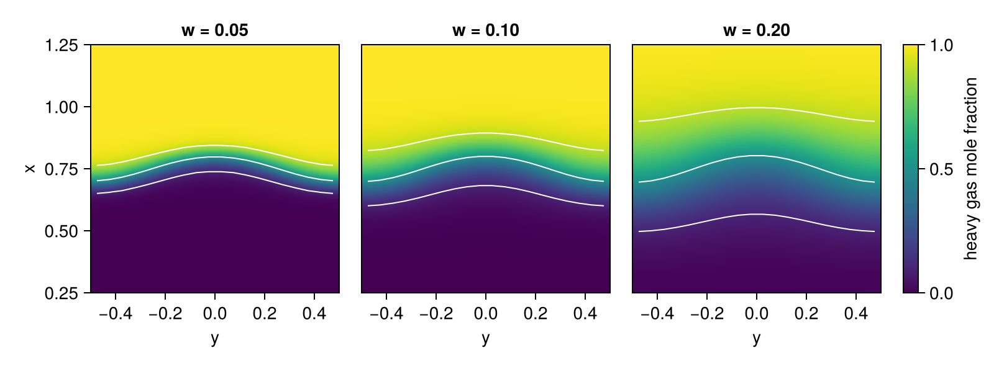
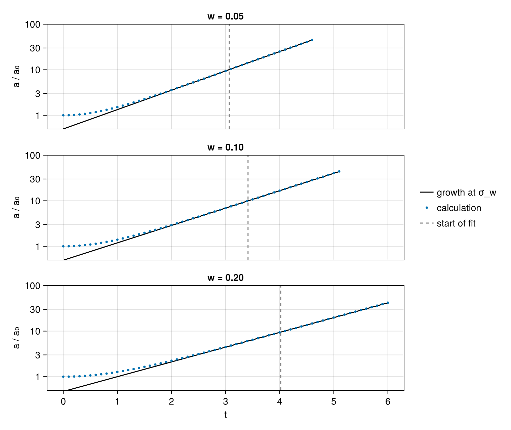
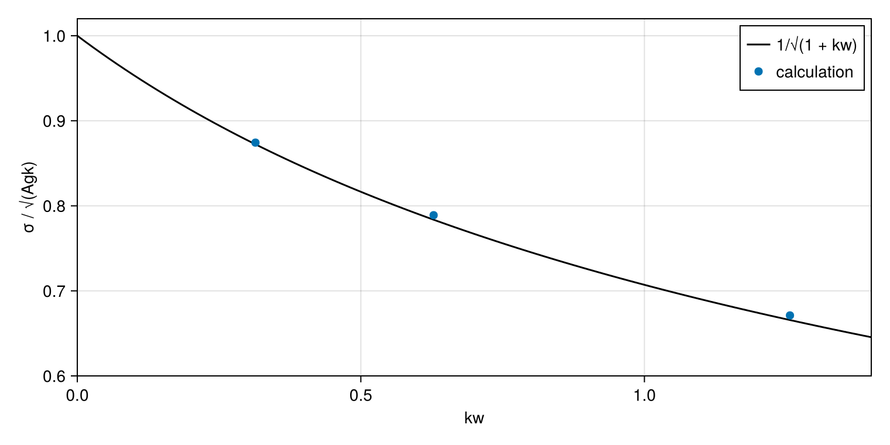

Rayleigh–Taylor instability
A heavy fluid resting on a light one under gravity is in equilibrium, but not a stable one. Where the interface dips, the heavy fluid sinks and the light fluid rises beside it, and a small ripple grows. Rayleigh described the instability in 1883, and Taylor showed in 1950 that it arises whenever a light fluid accelerates or supports a heavy one, with or without gravity: in the shell of an inertial confinement fusion capsule as the hot fuel inside decelerates it, and between the ejecta of a supernova and the surrounding gas that decelerates them.
Between two incompressible fluids with a sharp interface, a ripple of amplitude $a$ and wavenumber $k = 2\pi/\lambda$ under gravity $g$ obeys $d^2 a/dt^2 = A g k\, a$, the equation from which Richtmyer–Meshkov instability started, with $A = (\rho_h - \rho_l)/(\rho_h + \rho_l)$ the Atwood number of the heavy and light densities. The ripple grows as $e^{\sigma t}$ with
\[\sigma = \sqrt{A g k}.\]
An interface between gases is not sharp: diffusion spreads it into a layer, and Duff, Harlow and Hirt (1962) showed that such a layer grows more slowly than a sharp interface. For the density profile $\rho = \bar\rho\,[1 + A \tanh(x/w)]$ of a layer of width $w$ across the plane $x = 0$, and two densities that differ little, the linearized equations of incompressible flow give the growth rate
\[\sigma_w = \sqrt{\frac{A g k}{1 + k w}},\]
which approaches $\sqrt{Agk}$ as the layer becomes thin compared with the wavelength.
This tutorial places a heavy gas over a light one, rippled in a single mode, measures the growth rate for three widths of the layer, and compares it with $\sigma_w$.
using CompactLES # re-exports MPI
using CompactLES.Regions
MPI.Initialized() || MPI.Init(threadlevel=:funneled)
using CairoMakie
using Printf
CairoMakie.activate!(type = "png")Gases
The calculation uses dimensionless units in which gravity and the wavelength are both 1. The two gases have uniform densities 1 and 1.5, so $A = 0.2$. For this Atwood number a numerical solution of the linearized equations gives growth rates at most 0.5% above $\sigma_w$ for the widths used below.
IdealMixture takes each gas as an IdealSpecies with a specific gas constant and a heat capacity ratio. The heavy gas has two thirds of the light gas's specific gas constant, so at a common pressure and temperature it is 1.5 times as dense.
g, lambda = 1.0, 1.0
k = 2pi / lambda
eos = IdealMixture([IdealSpecies("light"; R = 1.0, gamma = 1.4),
IdealSpecies("heavy"; R = 2 / 3, gamma = 1.4)])
rho_l, rho_h = 1.0, 1.5
A = (rho_h - rho_l) / (rho_h + rho_l)
@printf("A = %.2f, σ = √(Agk) = %.4f\n", A, sqrt(A * g * k))A = 0.20, σ = √(Agk) = 1.1210In a laboratory the instability is slow compared with sound: under Earth's gravity, with a wavelength of a few centimeters, sound crosses a wavelength several hundred times in the time the ripple takes to grow by a factor of $e$. An explicit compressible solver takes steps shorter than the time sound needs to cross a cell, so most of its steps would resolve sound, not the growth. The pressure here is instead chosen so that sound crosses a wavelength only five to seven times in that time. Compressibility then enters through $g\lambda/c^2$, the fraction by which the weight of a column of gas one wavelength tall compresses the gas beneath it:
p0 = 40.0
c_l, c_h = sqrt(1.4p0 / rho_l), sqrt(1.4p0 / rho_h)
for (name, c) in (("light", c_l), ("heavy", c_h))
@printf("%s gas: c = %.2f, c/(λ√(Agk)) = %.1f, gλ/c² = %.3f\n", name, c,
c / (lambda * sqrt(A * g * k)), g * lambda / c^2)
endlight gas: c = 7.48, c/(λ√(Agk)) = 6.7, gλ/c² = 0.018
heavy gas: c = 6.11, c/(λ√(Agk)) = 5.5, gλ/c² = 0.027Initial state
Gravity points along $-x$. ConstantBodyForce adds the acceleration $(-g, 0, 0)$ to the momentum equation, as $\rho\,\mathbf{g}$, and the work it does to the energy equation.
The interface lies at $x = x_i + a_0\cos ky$, in a channel $1.5\lambda$ tall closed by slip walls, three quarters of a wavelength from each wall, far enough that the walls change the growth rate by less than 0.1%. As in the previous tutorial, the channel spans half a wavelength between two symmetry planes. The ripple starts at $a_0 = 10^{-3}\lambda$, small enough that its growth stays close to linear through the run.
Layers blends the gases across the interface over three local mesh spacings by default. That width shrinks as the grid is refined, and the growth rate would change with it. Here width is given as a length, the $w$ of $\sigma_w$, which fixes the profile whatever the grid.
A state of uniform pressure would accelerate under the body force from the first step. Hydrostatic takes the density and composition from Layers and replaces its pressure with one in hydrostatic balance with the body force, so that the gases start at rest. The balance is solved with the solver's own derivative operator along each grid line in the direction of the force; a pressure computed from the continuous balance would leave the truncation error of the scheme as a residual force. Each column of nodes is balanced on its own: where the interface is lower, the column holds more of the heavy gas and the pressure beneath it is higher, and the pressure differences between columns drive the instability. p_ref fixes the pressure at the coordinate at along the force, here at the mean interface position.
Lx, x_i, a0 = 1.5, 0.75, 1e-3
problem(w) = Problem(
name = "single-mode Rayleigh–Taylor",
eos = eos,
sources = (ConstantBodyForce((-g, 0.0, 0.0)),),
domain = ((0.0, Lx), (0.0, lambda / 2), (0.0, 1.0)),
bcs = (SlipWallBC(), (SymmetryPlaneBC(), SymmetryPlaneBC()), PeriodicBC()),
ic = Hydrostatic(Layers(Prim(Y = (1.0, 0.0), rho = rho_l, p = p0),
Slab(1, lo = (y, z) -> x_i + a0 * cos(k * y)) =>
Prim(Y = (0.0, 1.0), rho = rho_h, p = p0);
width = w);
p_ref = p0, at = x_i),
)Grid and run
The three widths are $w = 0.05$, 0.1 and 0.2, for which $kw$ is 0.31, 0.63 and 1.26. The layer needs resolution along $x$: a spacing of $\Delta x = \lambda/64$ puts 3.2 spacings across the thinnest layer. Across the channel the ripple is a single cosine, which a spacing $\Delta y = \lambda/20$ resolves; at $\Delta y = \lambda/32$ the growth rate changes by 0.03%. The numerics are the defaults.
Each run lasts $4.5/\sigma_w$, and a snapshot of the mole fractions every 0.1 time units records it:
widths = [0.05, 0.1, 0.2]
sigma_w(w) = sqrt(A * g * k / (1 + k * w))
function simulate(w)
solver, Q = setup(problem(w), Numerics(n_global = (97, 10, 1)))
snapshots = []
record = Callback(EveryTime(0.1), function (solver, Q)
push!(snapshots, field_snapshot(solver, Q; fields = (:X,)))
nothing
end)
run!(solver, Q; tfinal = 4.5 / sigma_w(w), nmax = 20_000, callback = record)
@printf("w = %.2f: %d steps to t = %.2f\n", w, solver.step, solver.t)
return snapshots
end
runs = [simulate(w) for w in widths]w = 0.05: 4694 steps to t = 4.60
w = 0.10: 5225 steps to t = 5.12
w = 0.20: 6151 steps to t = 6.03The heavy gas at the end of each run, mirrored across the plane $y = 0$ to show a whole wavelength, with contours at mole fractions 0.1, 0.5 and 0.9:
fig = Figure()
for (col, (w, run)) in enumerate(zip(widths, runs))
snap = run[end]
x, y = snap.coords[1], snap.coords[2]
X = snap[:X][:, :, 1, 2]' # the heavy gas, rows along y
ys = [-reverse(y); y]
Xs = [reverse(X, dims = 1); X]
ax = Axis(fig[1, col], width = 200, height = 200, title = @sprintf("w = %.2f", w),
xlabel = "y", ylabel = col == 1 ? "x" : "", xticks = -0.4:0.2:0.4)
hm = heatmap!(ax, ys, x, Xs, colormap = :viridis, colorrange = (0, 1),
interpolate = true)
contour!(ax, ys, x, Xs, levels = [0.1, 0.5, 0.9], color = :white)
limits!(ax, -lambda / 2, lambda / 2, 0.25, 1.25)
col > 1 && hideydecorations!(ax, grid = false)
col == 3 && Colorbar(fig[1, 4], hm, label = "heavy gas mole fraction")
end
resize_to_layout!(fig)
fig
The light gas rises into the heavy gas at $y = 0$, and the heavy gas sinks into the light gas at $y = \pm\lambda/2$.
Amplitude
The amplitude is taken from the height of heavy gas in each column of nodes along $x$: the sum of its mole fraction, which is its volume fraction, times the spacing. Raising the interface by $a\cos ky$ lowers that height by the same amount, whatever the width of the layer, so the amplitude is the $\cos ky$ component of the height, with the sign reversed. Unlike the position of one contour, it does not depend on where the contour falls between two nodes.
function amplitude(snap)
x, y = snap.coords[1], snap.coords[2]
height = vec(sum(snap[:X][:, :, 1, 2], dims = 1)) .* (x[2] - x[1])
return -sum(height .* cos.(k .* y)) / sum(cos.(k .* y) .^ 2)
endReleased from rest, a single mode grows as $\cosh\sigma t$, whose logarithmic slope is $\sigma\tanh\sigma t$: within 0.5% of $\sigma$ from $\sigma t = 3$ on. The initial layer, displaced as a whole, is not exactly the shape of the growing mode either, and the amplitude follows that mode only once it has outgrown the rest. The growth rate is therefore fitted to the logarithm of the amplitude from $3/\sigma_w$ to the end of the run:
function growth_rate(run, w)
sel = filter(s -> s.t >= 3 / sigma_w(w) - 1e-9, run)
t = [s.t for s in sel]
loga = log.(amplitude.(sel))
tm, am = sum(t) / length(t), sum(loga) / length(loga)
return sum((t .- tm) .* (loga .- am)) / sum((t .- tm) .^ 2)
end
rates = [growth_rate(run, w) for (run, w) in zip(runs, widths)]
println(" w kw σ_w measured ratio ka at the end")
for (w, rate, run) in zip(widths, rates, runs)
@printf("%5.2f %6.3f %7.4f %8.4f %7.4f %9.2f\n", w, k * w, sigma_w(w), rate,
rate / sigma_w(w), k * amplitude(run[end]))
end w kw σ_w measured ratio ka at the end
0.05 0.314 0.9779 0.9801 1.0023 0.28
0.10 0.628 0.8785 0.8844 1.0068 0.28
0.20 1.257 0.7462 0.7523 1.0081 0.26The amplitude on a logarithmic scale, divided by $a_0$, with a line growing at $\sigma_w$ through the first point of the fit:
fig = Figure(size = (760, 640))
axes = [Axis(fig[i, 1], yscale = log10, ylabel = "a / a₀", yticks = [1, 3, 10, 30, 100],
title = @sprintf("w = %.2f", w)) for (i, w) in enumerate(widths)]
for (i, (ax, w, run)) in enumerate(zip(axes, widths, runs))
t = [s.t for s in run]
a = amplitude.(run)
t1 = 3 / sigma_w(w)
i1 = findfirst(>=(t1 - 1e-9), t)
ts = range(0, t[end]; length = 100)
lines!(ax, ts, a[i1] / a0 .* exp.(sigma_w(w) .* (ts .- t[i1])), color = :black,
label = "growth at σ_w")
scatter!(ax, t, a ./ a0, markersize = 5, label = "calculation")
vlines!(ax, [t1], color = :gray, linestyle = :dash, label = "start of fit")
ylims!(ax, 0.5, 100)
i < 3 && hidexdecorations!(ax, grid = false)
end
linkxaxes!(axes...)
axes[3].xlabel = "t"
Legend(fig[1:3, 2], axes[1], framevisible = false)
fig
Early on the amplitude lies above the line, as $\cosh\sigma t$ lies above $\tfrac{1}{2}e^{\sigma t}$.
Growth rate
The measured rates, divided by the sharp-interface rate $\sqrt{Agk}$, against $kw$:
fig = Figure(size = (760, 380))
ax = Axis(fig[1, 1], xlabel = "kw", ylabel = "σ / √(Agk)")
kws = range(0, 1.4; length = 100)
lines!(ax, kws, 1 ./ sqrt.(1 .+ kws), color = :black, label = "1/√(1 + kw)")
scatter!(ax, k .* widths, rates ./ sqrt(A * g * k), markersize = 10,
label = "calculation")
limits!(ax, 0, 1.4, 0.6, 1.02)
axislegend(ax, position = :rt)
fig
The measured rates lie within 1% of $\sigma_w$ and follow its decrease with the width of the layer, from 87% of the sharp-interface rate at the thinnest layer to 67% at the thickest. Most of the remaining excess is compressibility, which raises the rate in proportion to $g\lambda/c^2$: at twice the pressure the rates lie within 0.25% of $\sigma_w$.
What this checks
- Under a body force, a heavy gas released from hydrostatic balance over a light one with a rippled interface grows at the rate of linear theory, to within 1% at a pressure where compressibility adds about as much.
- The growth slows with the width of the interface as the solution for a diffuse layer predicts, from 87% to 67% of the sharp-interface rate.
This page was generated using Literate.jl.